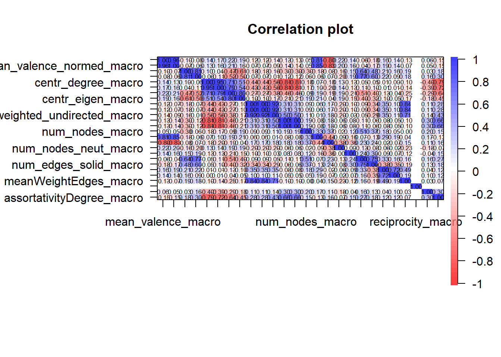
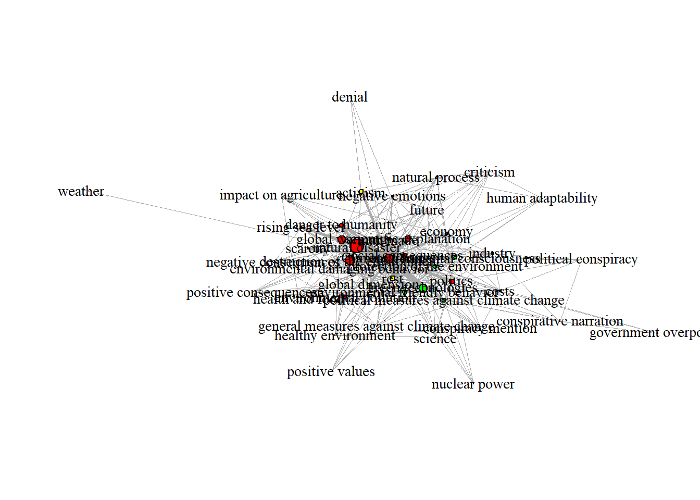
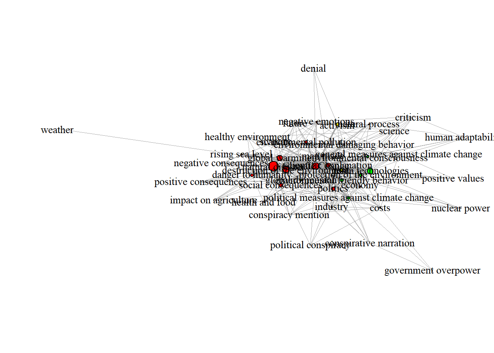
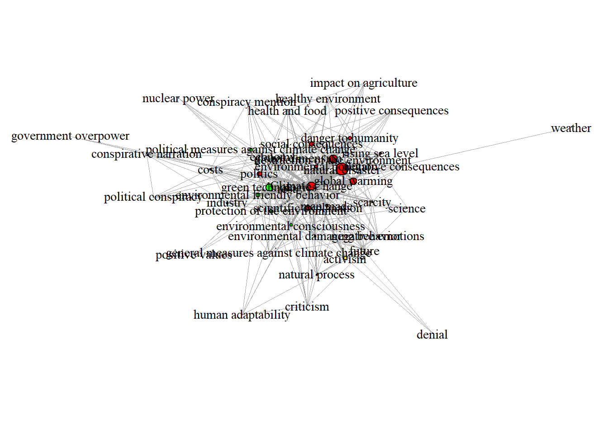
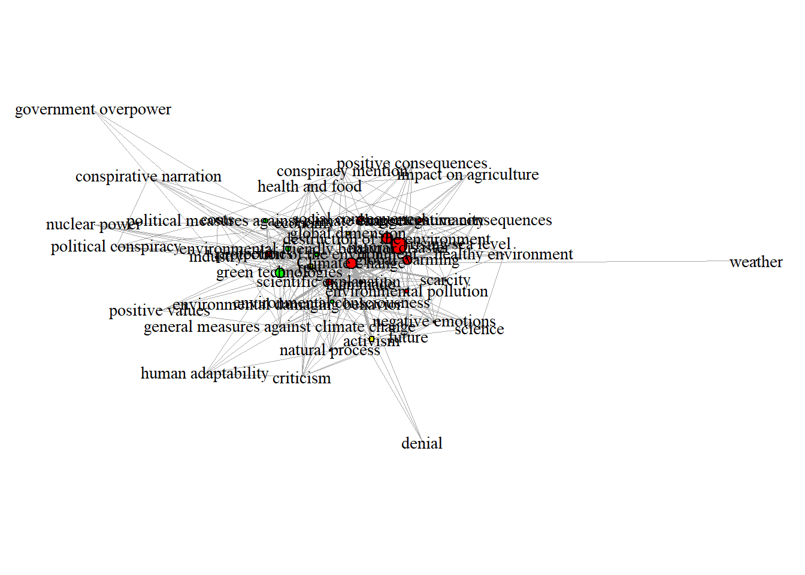

## global variables: Analyzes for Bachelor Theses
Notes
global variables
load merged pre-processed data
# sets the directory of location of this script as the current directory
# setwd(dirname(rstudioapi::getSourceEditorContext()$path))
# load packages
require(pacman)
# regsem not needed!
p_load('tidyverse', 'jsonlite', 'magrittr', 'xlsx',
'stargazer', 'psych', 'jtools', 'DT', 'ggstatsplot',
'lavaan', 'igraph',
'regsem', 'MplusAutomation')
# load data
setwd("outputs")
t12_questionnaireCAMs <- readRDS(file = "t12_questionnaireCAMs.rds")
CAMfiles <- readRDS(file = "CAMfiles.rds")
CAMdrawn <- readRDS(file = "CAMdrawn.rds")
t12_questionnaireCAMs$total_min_prolific[t12_questionnaireCAMs$total_min_prolific > 1000] <- NA
# load functions
setwd("../../functions")
for(i in 1:length(dir())){
# print(dir()[i])
source(dir()[i], encoding = "utf-8")
}
setwd("../functions_CAMapp")
for(i in 1:length(dir())){
# print(dir()[i])
source(dir()[i], encoding = "utf-8")
}
rm(i)Laras BA
policy scale
regEx <- "^policyItems"
nameScale <- "Policy Scale"
nameVariable <- "mean_PolicyItems"
### number of items
sum(str_detect(string = colnames(t12_questionnaireCAMs), pattern = regEx))[1] 8### only keep values with no missing values
tmp_dat <- t12_questionnaireCAMs[, c(str_subset(string = colnames(t12_questionnaireCAMs), pattern = regEx), "country.y")]
# tmp_dat <- tmp_dat[!is.na(tmp_dat$country.y), ]
tmp_dat <- tmp_dat[tmp_dat$country.y == "Germany" & !is.na(tmp_dat$country.y), ]
cat("analyes for country/ies:\n", unique(tmp_dat$country.y), "\n")analyes for country/ies:
Germany ### get correlation plot, descriptives, EFA, CFA
tmp <- CFAstats(dataset = tmp_dat, regularExp = regEx, labelLatent = str_remove(string = nameVariable, pattern = "mean_"),
showPlots = TRUE,
computeEFA = TRUE,
computeCFA = TRUE,
computeCFAMplus = FALSE)

descriptive statistics:
Mean SD Median CoeffofVariation Minimum Maximun Lower Quantile
policyItems-1 6.35 1.33 7 0.21 1 7 1
policyItems-2 3.55 2.10 3 0.59 1 7 1
policyItems-3 5.32 1.87 6 0.35 1 7 1
policyItems-4 4.08 2.36 5 0.58 1 7 1
policyItems-5 5.85 1.79 7 0.31 1 7 1
policyItems-6 2.69 1.82 2 0.68 1 7 1
policyItems-7 4.14 2.23 4 0.54 1 7 1
policyItems-8 5.32 1.84 6 0.34 1 7 1
Upper Quantile Skewness Kurtosis(-3) KS-Test
policyItems-1 7 -2.53 6.46 0.00
policyItems-2 7 0.16 -1.36 0.05
policyItems-3 7 -1.07 0.17 0.00
policyItems-4 7 -0.18 -1.62 0.00
policyItems-5 7 -1.76 2.05 0.00
policyItems-6 7 0.83 -0.47 0.00
policyItems-7 7 -0.17 -1.43 0.02
policyItems-8 7 -1.22 0.52 0.00
variables under investigation: policyItems1 policyItems2 policyItems3 policyItems4 policyItems5 policyItems6 policyItems7 policyItems8
Cronbachs Alpha: 0.82
Error in if (any(lower > upper)) stop("lower>upper integration limits") :
Fehlender Wert, wo TRUE/FALSE nötig ist
[1] "use instead of polychoric correlations pearson correlations"
Parallel analysis suggests that the number of factors = 2 and the number of components = 1
PolicyItems
Number of components: 1
EFA factor loadings (1 factor solution):
Loadings:
MR1
policyItems1 0.771
policyItems2 0.570
policyItems3 0.844
policyItems4 0.641
policyItems5 0.916
policyItems6 0.320
policyItems7 0.555
policyItems8 0.589
MR1
SS loadings 3.639
Proportion Var 0.455
CFA summary and fit statistics:
lavaan 0.6.17 ended normally after 30 iterations
Estimator ML
Optimization method NLMINB
Number of model parameters 16
Number of observations 74
Model Test User Model:
Standard Scaled
Test Statistic 53.054 42.438
Degrees of freedom 20 20
P-value (Chi-square) 0.000 0.002
Scaling correction factor 1.250
Yuan-Bentler correction (Mplus variant)
Model Test Baseline Model:
Test statistic 240.191 186.851
Degrees of freedom 28 28
P-value 0.000 0.000
Scaling correction factor 1.285
User Model versus Baseline Model:
Comparative Fit Index (CFI) 0.844 0.859
Tucker-Lewis Index (TLI) 0.782 0.802
Robust Comparative Fit Index (CFI) 0.863
Robust Tucker-Lewis Index (TLI) 0.808
Loglikelihood and Information Criteria:
Loglikelihood user model (H0) -1119.900 -1119.900
Scaling correction factor 1.322
for the MLR correction
Loglikelihood unrestricted model (H1) -1093.373 -1093.373
Scaling correction factor 1.282
for the MLR correction
Akaike (AIC) 2271.799 2271.799
Bayesian (BIC) 2308.664 2308.664
Sample-size adjusted Bayesian (SABIC) 2258.242 2258.242
Root Mean Square Error of Approximation:
RMSEA 0.149 0.123
90 Percent confidence interval - lower 0.101 0.077
90 Percent confidence interval - upper 0.199 0.169
P-value H_0: RMSEA <= 0.050 0.001 0.008
P-value H_0: RMSEA >= 0.080 0.989 0.938
Robust RMSEA 0.138
90 Percent confidence interval - lower 0.079
90 Percent confidence interval - upper 0.195
P-value H_0: Robust RMSEA <= 0.050 0.011
P-value H_0: Robust RMSEA >= 0.080 0.948
Standardized Root Mean Square Residual:
SRMR 0.104 0.104
Parameter Estimates:
Standard errors Sandwich
Information bread Observed
Observed information based on Hessian
Latent Variables:
Estimate Std.Err z-value P(>|z|) Std.lv Std.all
PolicyItems =~
policyItems1 1.000 0.959 0.727
policyItems2 1.062 0.300 3.545 0.000 1.019 0.488
policyItems3 1.561 0.333 4.692 0.000 1.497 0.805
policyItems4 1.228 0.437 2.808 0.005 1.178 0.503
policyItems5 1.659 0.348 4.765 0.000 1.592 0.896
policyItems6 0.501 0.224 2.232 0.026 0.480 0.266
policyItems7 1.068 0.343 3.117 0.002 1.025 0.463
policyItems8 1.193 0.344 3.466 0.001 1.144 0.627
Variances:
Estimate Std.Err z-value P(>|z|) Std.lv Std.all
.policyItems1 0.821 0.275 2.990 0.003 0.821 0.472
.policyItems2 3.317 0.417 7.962 0.000 3.317 0.762
.policyItems3 1.221 0.340 3.593 0.000 1.221 0.353
.policyItems4 4.092 0.645 6.346 0.000 4.092 0.747
.policyItems5 0.620 0.281 2.208 0.027 0.620 0.196
.policyItems6 3.038 0.447 6.793 0.000 3.038 0.929
.policyItems7 3.850 0.512 7.526 0.000 3.850 0.786
.policyItems8 2.018 0.462 4.369 0.000 2.018 0.606
PolicyItems 0.920 0.431 2.137 0.033 1.000 1.000
CFA first 6 Modification Indices:
lhs op rhs mi epc sepc.lv sepc.all sepc.nox
38 policyItems4 ~~ policyItems7 17.619 2.014 2.014 0.507 0.507
28 policyItems2 ~~ policyItems6 9.116 1.141 1.141 0.359 0.359
23 policyItems1 ~~ policyItems7 7.217 -0.612 -0.612 -0.344 -0.344
36 policyItems4 ~~ policyItems5 4.761 -0.607 -0.607 -0.381 -0.381
21 policyItems1 ~~ policyItems5 4.638 0.344 0.344 0.482 0.482
44 policyItems6 ~~ policyItems8 4.299 -0.624 -0.624 -0.252 -0.252# ### variable mean
# questionnaireCAMs[[nameVariable]] <- questionnaireCAMs %>%
# select(matches(regEx)) %>%
# rowMeans(na.rm = TRUE)Amelies BA
split into CAMs from Germany
setwd("outputs/BA_Amelie")
if(!file.exists("CAMs_Germany")){
dir.create("CAMs_Germany")
}
setwd("CAMs_Germany")
CAMfiles_Germany <- CAMfiles
## check is ID data set is complete
if(!all(CAMfiles_Germany[[1]]$participantCAM %in% t12_questionnaireCAMs$PROLIFIC_PID)){
print("Error")
}else{
tmp_ids <- t12_questionnaireCAMs$PROLIFIC_PID[t12_questionnaireCAMs$country.x == "Germany"]
## keep only CAM data from Germany
CAMfiles_Germany[[1]] <- CAMfiles_Germany[[1]][CAMfiles_Germany[[1]]$participantCAM %in% tmp_ids,]
CAMfiles_Germany[[2]] <- CAMfiles_Germany[[2]][CAMfiles_Germany[[2]]$participantCAM %in% tmp_ids,]
CAMfiles_Germany[[3]] <- CAMfiles_Germany[[3]][CAMfiles_Germany[[3]]$participantCAM.x %in% tmp_ids,]
## save files ob subsets
vroom::vroom_write(x = CAMfiles_Germany[[1]], file = "CAM_nodes_Germany.txt")
vroom::vroom_write(x = CAMfiles_Germany[[2]], file = "CAM_connectors_Germany.txt")
vroom::vroom_write(x = CAMfiles_Germany[[3]], file = "CAM_merged_Germany.txt")
}sel_ids <- unique(CAMfiles_Germany[[1]]$participantCAM)
tmp_nodes <- CAMfiles_Germany[[1]]
tmp_nodes$text_summarized <- str_remove(string = tmp_nodes$text_summarized, pattern = "_positive$|_negative$|_neutral$|_ambivalent$")
tmp_nodes$text_summarized <- str_trim(string = tmp_nodes$text_summarized)
CAMaggregated <- aggregate_CAMs(dat_merged = CAMfiles_Germany[[3]], dat_nodes = tmp_nodes,
ids_CAMs = sel_ids)[1] "aggregate_CAMs: using participant CAM ids"
processing 74 CAMs... Warning: `graph.data.frame()` was deprecated in igraph 2.0.0.
ℹ Please use `graph_from_data_frame()` instead.[1] "== participantCAM in drawnCAM"
[1] "text_summarized column identified"g = CAMaggregated[[2]]
g2 = simplify(CAMaggregated[[2]])
# plot(g2, edge.arrow.size=0.01,
# vertex.size=diag(CAMaggregated[[1]]) / max(diag(CAMaggregated[[1]]))*20)
E(g2)$weight = sapply(E(g2), function(e) {
length(all_shortest_paths(g, from=ends(g2, e)[1], to=ends(g2, e)[2])$res) } )
E(g2)$weight = E(g2)$weight / 2
# E(g2)$weight[E(g2)$weight == 1] <- NA
V(g2)$color[V(g2)$value <= .5 & V(g2)$value >= -.5] <- "yellow"
V(g2)$shape <- NA
V(g2)$shape <- ifelse(test = V(g2)$color == "yellow", yes = "square", no = "circle")
# tmp <- make_ego_graph(g, order = 2, "conspirative narration")
# plot(tmp[[1]], edge.arrow.size = 0,
# layout=layout_nicely, vertex.frame.color="black", asp = .5, margin = -0.1,
# vertex.size=diag(CAMaggregated[[1]]) / max(diag(CAMaggregated[[1]]))*5,
# vertex.label.cex = .9,
# edge.weight=2, edge.width=(E(g2)$weight/3))
### > plot multiple times because of random layout
for(i in 1:5){
plot(g2, edge.arrow.size = 0,
layout=layout_nicely, vertex.frame.color="black", asp = .5, margin = -0.1,
vertex.size=diag(CAMaggregated[[1]]) / max(diag(CAMaggregated[[1]]))*5,
vertex.label.cex = .9,
edge.weight=2, edge.width=(E(g2)$weight/3))
}




split into CAMs from USA
setwd("outputs/BA_Amelie")
if(!file.exists("CAMs_USA")){
dir.create("CAMs_USA")
}
setwd("CAMs_USA")
CAMfiles_USA <- CAMfiles
## check is ID data set is complete
if(!all(CAMfiles_USA[[1]]$participantCAM %in% t12_questionnaireCAMs$PROLIFIC_PID)){
print("Error")
}else{
tmp_ids <- t12_questionnaireCAMs$PROLIFIC_PID[t12_questionnaireCAMs$country.x == "USA"]
## keep only CAM data from Germany
CAMfiles_USA[[1]] <- CAMfiles_USA[[1]][CAMfiles_USA[[1]]$participantCAM %in% tmp_ids,]
CAMfiles_USA[[2]] <- CAMfiles_USA[[2]][CAMfiles_USA[[2]]$participantCAM %in% tmp_ids,]
CAMfiles_USA[[3]] <- CAMfiles_USA[[3]][CAMfiles_USA[[3]]$participantCAM.x %in% tmp_ids,]
## save files ob subsets
vroom::vroom_write(x = CAMfiles_USA[[1]], file = "CAM_nodes_USA.txt")
vroom::vroom_write(x = CAMfiles_USA[[2]], file = "CAM_connectors_USA.txt")
vroom::vroom_write(x = CAMfiles_USA[[3]], file = "CAM_merged_USA.txt")
}Magdalenas BA
get the first 8 concepts drawn in CAMs
### only keep t2
tmp_dat <- t12_questionnaireCAMs[!is.na(t12_questionnaireCAMs$country.y), ]
affectiveImagery_CAMs <- tmp_dat[, c("PROLIFIC_PID", "country.y", "classes_conspiracy", "politicalParty", "socio_sex",
"mean_affImg", "mean_valence_macro", "num_nodes_macro",
str_subset(string = colnames(tmp_dat), pattern = "^R[:digit:]"),
sort(str_subset(string = colnames(tmp_dat), pattern = "^affImg")))]
sum(is.na(affectiveImagery_CAMs$mean_affImg))[1] 2affectiveImagery_CAMs[, paste0("A", 1:8)] <- NA
for(i in 1:nrow(tmp_dat)){
tmp_concepts <- CAMfiles[[1]][CAMfiles[[1]]$participantCAM == tmp_dat$PROLIFIC_PID[i],]
tmp_concepts <- tmp_concepts$text[order(tmp_concepts$date, decreasing = FALSE)][2:9]
affectiveImagery_CAMs[i, str_subset(string = colnames(affectiveImagery_CAMs), pattern = "^A")] <- tmp_concepts
}
### save data set
setwd("outputs/BA_Magdalena")
if(!file.exists("data_AffImg_CAMs")){
dir.create("data_AffImg_CAMs")
}
setwd("data_AffImg_CAMs")
## save as .xlsx file
xlsx::write.xlsx2(x = affectiveImagery_CAMs, file = "affectiveImagery_CAMs.xlsx")
## save as .csv file
write.csv2(x = affectiveImagery_CAMs, file = "affectiveImagery_CAMs.csv")
## save as R object
saveRDS(affectiveImagery_CAMs, file = "affectiveImagery_CAMs.rds")clean affective imagery
create relevant subset:
affectiveImagery <- t12_questionnaireCAMs[, c("PROLIFIC_PID", "country.x", "classes_conspiracy", "politicalParty", "socio_sex",
"mean_affImg",
str_subset(string = colnames(tmp_dat), pattern = "^R[:digit:]"),
sort(str_subset(string = colnames(tmp_dat), pattern = "^affImg")))]
sum(is.na(affectiveImagery$mean_affImg))[1] 14use approximate matching only for German (not run automatically!):
subset_affectiveImagery <- affectiveImagery[affectiveImagery$country.x == "Germany",]
tmp_vec <- unlist(subset_affectiveImagery[, str_subset(string = colnames(tmp_dat), pattern = "^R[:digit:]")])
tmp_vec <- tmp_vec[!is.na(tmp_vec)]
applyApproximate <- data.frame(originalWord = tmp_vec, summarizedWord = tmp_vec)
rm(subset_affectiveImagery); rm(tmp_vec)
length(applyApproximate$originalWord)
length(unique(applyApproximate$originalWord))
names(table(applyApproximate$originalWord))[table(applyApproximate$originalWord) >= 10]
readkey <- function()
{
# cat ('\nPress [enter] to continue\n')
# cat('or write "aaa" in the console to terminate loop\n')
line <- readline()
if(line == "a123"){
cat("for loop terminated, please write down the last round where you have summarized words:",
i, "\n")
stop("process terminated")
}else{
return(line)
}
}
defineDistance = 2
for(i in 1:nrow(applyApproximate)){
print(i)
dist <- stringdist::stringdist(a = applyApproximate$summarizedWord[i], applyApproximate$summarizedWord)
if(!all(unique(applyApproximate$summarizedWord[dist <= defineDistance]) == applyApproximate$summarizedWord[i])){
cat("\n if you want to summarize the followings words:\n")
print(unique(applyApproximate$summarizedWord[dist <= defineDistance]))
cat('>>> provide a superordinate word, else write "c" (for continue) or write "a123" to stop the summary process')
out <- readkey()
# print(out)
if(out != "c"){
applyApproximate$summarizedWord[applyApproximate$summarizedWord %in% unique(applyApproximate$summarizedWord[dist <= defineDistance])] <- out
}
}
}
### save data set
setwd("outputs/BA_Magdalena")
if(!file.exists("data")){
dir.create("data_AffImg")
}
setwd("data_AffImg")
## save as .xlsx file
xlsx::write.xlsx2(x = applyApproximate, file = "applyApproximate.xlsx")
## save as .csv file
write.csv2(x = applyApproximate, file = "applyApproximate.csv")
## save as R object
saveRDS(applyApproximate, file = "applyApproximate.rds")overwrite affective imagery
create long format data
### create long format data
counter = 1
for(p in affectiveImagery$PROLIFIC_PID){
tmp_dat <- affectiveImagery[affectiveImagery$PROLIFIC_PID == p, ]
tmp_vec_word <- unlist(tmp_dat[, str_subset(string = colnames(tmp_dat), pattern = "^R[:digit:]")])
tmp_vec_word <- tmp_vec_word[!is.na(tmp_vec_word)]
tmp_vec_valence <- unlist(tmp_dat[, str_subset(string = colnames(tmp_dat), pattern = "^affImgAffect")])
tmp_vec_valence <- tmp_vec_valence[!is.na(tmp_vec_valence)]
if(length(tmp_vec_word) != length(tmp_vec_valence)){
tmp_vec_valence <- rep(NA, times = length(tmp_vec_word))
}
if(length(tmp_vec_word) == 0 & length(tmp_vec_valence) == 0){
tmp_vec_word <- NA
tmp_vec_valence <- NA
}
if(counter == 1){
dat_out <- data.frame(PROLIFIC_PID = tmp_dat$PROLIFIC_PID,
country = tmp_dat$country.x,
class_conspiracy = tmp_dat$classes_conspiracy,
originalWord = tmp_vec_word,
valence = tmp_vec_valence)
}else{
dat_out <- rbind(dat_out, data.frame(PROLIFIC_PID = tmp_dat$PROLIFIC_PID,
country = tmp_dat$country.x,
class_conspiracy = tmp_dat$classes_conspiracy,
originalWord = tmp_vec_word,
valence = tmp_vec_valence))
}
counter = counter + 1
}overwrite approximate matching
setwd("data_BA_Magdalena")
overwriteApproximate <- read.xlsx2(file = "AffectiveImageryDataGermanSummarised.xlsx", sheetIndex = 1)
dat_out$summarizedWord <- dat_out$originalWord
# w <- "Real"
length(unique(dat_out$summarizedWord))[1] 1337for(w in unique(overwriteApproximate$originalWord)){
dat_out$summarizedWord[dat_out$originalWord %in% w & dat_out$country == "Germany"] <- overwriteApproximate$summarizedWord_final[overwriteApproximate$originalWord %in% w]
}
length(unique(dat_out$summarizedWord))[1] 1001setwd("..")
### save data set
setwd("outputs/BA_Magdalena")
if(!file.exists("data_AffImg_processed")){
dir.create("data_AffImg_processed")
}
setwd("data_AffImg_processed")
## save as .xlsx file
xlsx::write.xlsx2(x = dat_out, file = "affImg.xlsx")
## save as .csv file
write.csv2(x = dat_out, file = "affImg.csv")
## save as R object
saveRDS(dat_out, file = "affImg.rds")overwrite translated words
setwd("data_BA_Magdalena")
overwriteApproximate <- read.xlsx2(file = "AffectiveImageryDataGermanTranslated.xlsx", sheetIndex = 1)
overwriteApproximate <- overwriteApproximate[overwriteApproximate$country == "Germany", ]
# dat_out$summarizedWord <- dat_out$originalWord
# w <- unique(overwriteApproximate$originalWord)[2]
length(unique(dat_out$summarizedWord))[1] 1001for(w in unique(overwriteApproximate$originalWord)){
dat_out$summarizedWord[dat_out$originalWord %in% w & dat_out$country == "Germany"] <- overwriteApproximate$summarizedWord_final[overwriteApproximate$originalWord %in% w]
}
length(unique(dat_out$summarizedWord))[1] 891setwd("..")
# ### save data set
setwd("outputs/BA_Magdalena")
if(!file.exists("data_AffImg_processed")){
dir.create("data_AffImg_processed")
}
setwd("data_AffImg_processed")
## save as .xlsx file
xlsx::write.xlsx2(x = dat_out, file = "affImg_translated.xlsx")
## save as .csv file
write.csv2(x = dat_out, file = "affImg_translated.csv")
## save as R object
saveRDS(dat_out, file = "affImg_translated.rds")statistics
dat_out %>%
group_by(class_conspiracy) %>%
summarise(N = n(), mean = mean(valence, na.rm = TRUE))# A tibble: 3 × 3
class_conspiracy N mean
<dbl> <int> <dbl>
1 1 1004 2.15
2 2 754 2.50
3 3 737 2.71dat_out %>%
group_by(class_conspiracy, country) %>%
summarise(N = n(), mean = mean(valence, na.rm = TRUE))`summarise()` has grouped output by 'class_conspiracy'. You can override using
the `.groups` argument.# A tibble: 6 × 4
# Groups: class_conspiracy [3]
class_conspiracy country N mean
<dbl> <chr> <int> <dbl>
1 1 Germany 642 2.17
2 1 USA 362 2.10
3 2 Germany 385 2.42
4 2 USA 369 2.58
5 3 Germany 225 2.49
6 3 USA 512 2.81clean affective imagery after translation
use approximate matching for English and German (not run automatically!):
## remove NAs
dat_out$summarizedWord[is.na(dat_out$summarizedWord)] <- ""
readkey <- function()
{
# cat ('\nPress [enter] to continue\n')
# cat('or write "aaa" in the console to terminate loop\n')
line <- readline()
if(line == "a123"){
cat("for loop terminated, please write down the last round where you have summarized words:",
i, "\n")
stop("process terminated")
}else{
return(line)
}
}
defineDistance = 1
for(i in 1:nrow(dat_out)){
print(i)
dist <- stringdist::stringdist(a = dat_out$summarizedWord[i], dat_out$summarizedWord)
if(!all(unique(dat_out$summarizedWord[dist <= defineDistance]) == dat_out$summarizedWord[i])){
cat("\n if you want to summarize the followings words:\n")
print(unique(dat_out$summarizedWord[dist <= defineDistance]))
cat('>>> provide a superordinate word, else write "c" (for continue) or write "a123" to stop the summary process')
out <- readkey()
# print(out)
if(out != "c"){
dat_out$summarizedWord[dat_out$summarizedWord %in% unique(dat_out$summarizedWord[dist <= defineDistance])] <- out
}
}
}
### save data set
setwd("outputs/BA_Magdalena")
if(!file.exists("data_AffImg")){
dir.create("data_AffImg")
}
setwd("data_AffImg")
## save as .xlsx file
xlsx::write.xlsx2(x = applyApproximate, file = "applyApproximate_translated.xlsx")
## save as .csv file
write.csv2(x = applyApproximate, file = "applyApproximate_translated.csv")
## save as R object
saveRDS(applyApproximate, file = "applyApproximate_translated.rds")get tables for ratings
### save data set
setwd("outputs/BA_Magdalena")
if(!file.exists("savedWordlists_combined")){
dir.create("savedWordlists_combined")
}
setwd("savedWordlists_combined")
### create tables for ratings
for(i in 1:length(unique(CAMfiles[[1]]$participantCAM))){
## t1 - Affective Imagery
tmp_associations <- dat_out[dat_out$PROLIFIC_PID %in% unique(CAMfiles[[1]]$participantCAM)[i], ]
## t2 - CAM
tmp_concepts <- CAMfiles[[1]][CAMfiles[[1]]$participantCAM %in% unique(CAMfiles[[1]]$participantCAM)[i], ]
## add variables Affective Imagery
tmp_associations$type <- "Affective Imagery"
tmp_associations$Rating_Magdalena <- NA
tmp_associations$Comment_Magdalena <- NA
tmp_associations$id <- NA
tmp_associations$comment <- NA
tmp_associations <- tmp_associations[, c("type", "PROLIFIC_PID", "id", "summarizedWord", "valence", "comment", "Rating_Magdalena", "Comment_Magdalena")]
colnames(tmp_associations)[4] <- "text"
## add variables CAM
tmp_concepts$type <- "CAM"
tmp_concepts$Rating_Magdalena <- NA
tmp_concepts$Comment_Magdalena <- NA
## order chronologically
tmp_concepts <- tmp_concepts[order(tmp_concepts$dateConceptCreated), ]
tmp_concepts <- tmp_concepts[1:9, ] # first 8 concepts
tmp_concepts <- tmp_concepts[, c("type", "participantCAM", "id", "text", "value", "comment", "Rating_Magdalena", "Comment_Magdalena")]
colnames(tmp_concepts)[2] <- "PROLIFIC_PID"
colnames(tmp_concepts)[5] <- "valence"
tmp_dat <- rbind(tmp_associations, tmp_concepts)
if(i == 1){
write.xlsx2(x = tmp_dat, file="ratingsAffimgCAMs.xlsx", sheetName=unique(tmp_concepts$PROLIFIC_PID), row.names=FALSE)
}else{
write.xlsx2(tmp_dat, file="ratingsAffimgCAMs.xlsx", sheetName=unique(tmp_concepts$PROLIFIC_PID), row.names=FALSE, append=TRUE)
}
write.xlsx2(x = tmp_dat, file=paste0(unique(tmp_concepts$PROLIFIC_PID), ".xlsx"), sheetName=unique(tmp_concepts$PROLIFIC_PID), row.names=FALSE)
}### save data set
setwd("outputs/BA_Magdalena")
setwd("savedWordlists_combined")
# file <- system.file("tests", "ratingsAffimgCAMs.xlsx", package = "xlsx")
wb <- loadWorkbook("ratingsAffimgCAMs.xlsx")
sheets <- getSheets(wb)
length(sheets)[1] 121